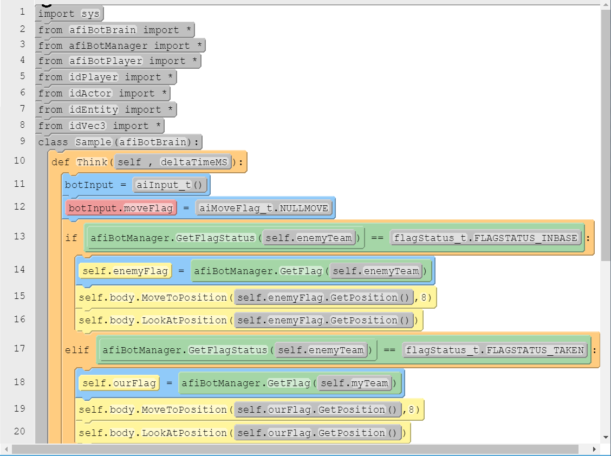
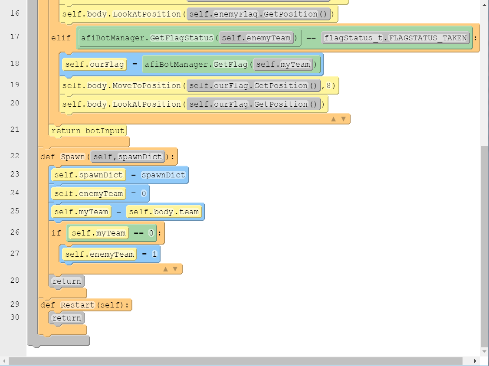

Info:
The location of the bot.pk4’s are in the d3xp\botPaks
Each of the pk4’s contain a bot.def and a bot.py
The name of the bot must be uniform across all files (which includes capitalizations).
to create your bots:
Step-1:
enter your name and your bot name on the left
Step-2:
click the "QuickStart" button on the bottom to get the basic struct of bots code
Step-3:
drag and drop the functions or commands to complete your bot
Step-4:
click the "Export" button to export and save your bot to your disk
afiBotManager - Global/Static instance:
GetFlag
- Takes in team ID return idEntity
GetFlagStatus
- Returns a flagStatus_t
GetFlagCarrier
- Takes team ID, returns idPlayer NOT WORKING
GetWinningTeam
- Return winning team ID NOTWORKING
ConsolePrint
- Prints passed in string
afiBotBrain - What python based bot class scripts should inherit from
Overrides:
Think
- Called once a frame once server is started with loaded bot
- Returns an aiInput_t for the bot. The use of this is currently undefined and returning a new instance of aiInput_t() each frame will function correctly.
Spawn
- Called when bot is spawned
Restart
- Called when bot is restarted
Contains:
Body
- Instance of afiBotPlayer
PhysicsObject
- Readonly instance of idPhysics_Player
flagStatus_t enum containning {FLAGSTATUS_INBASE, FLAGSTATUS_TAKEN, FLAGSTATUS_STRAY}
afiBotPlayer - Accessed as self.body in Python scripts inherited from afiBotBrain
Methods:
FindItem
params: item - string based name of item to find
returns idEntity reference to nearest instance of item found with name matching string "item"
InView
params: entity - idEntity you wish to know if is in view
returns true if the entity is in view
MoveTo
params: pos - idVec3 representing the position to move to
speed - float based value for speed. //What is the acceptible range? Does this override "UpdateAIMoveFlag"?
MoveToPosition
params: pos - idVec3 representing the position to move to
range - float based value for acceptible stopping distance from pos
returns true if defined location to move to is reachable
MoveToEntity
params: entity - the idEntity to move to
returns true if defined location to move to is reachable
MoveToPlayer
params: player - the idPlayer to move to
returns true if defined location to move to is reachable
Attack
- Tells bot to attack.
*Note* Is the rest of this passage true? The bot will use its currently equiped weapon if possible, and will reload if needed. The bot will switch weapons if the current one is completely out of reserve ammo as well. The bot will not aim, and will simply attack in the direction it is currently facing.
StopAttack
- Tells the bot to stop attacking.
Jump
- Sets the bots move flag to jump
LookInDirection
params: dir - idVec3 representing the direction the bot should face.
LookAtPosition
params: pos - idVec3 representing the position the bot should look at.
MoveToNearest
- Tells bot to move to the nearest instance of the passed in item name, if one exists
params: item - String name of item to move to nearest instance of
returns the idEntity reference to item being moved to, or null if the specified item does not exist.
PathToGoal
N/A
ReachedPos
- Queries if the bot is within a specified range of a specified location
params: pos - idVec3 position to test
range - float based distance to check if bot is within range of pos
returns true if the bot's distance from pos is less than range
SwitchWeapon
- Causes the bot to switch to using the specified weapon
params: weaponName - The name of the weapon to switch to
returns true if the weapon specified was switched to, false if the bot doe not have the desired weapon
HasAmmo
- Queries how much ammo the bot has for the specified weapon
params: weaponName - name of the weapon to query
returns the amount of ammo remainning in the specified weapon, or 0 if the bot does not have the weapon
AmmoInClip
- Reloads teh bots current weapon if the weapon clip is empty
FindNearbyPlayers
- Returns a list of players that are in view of the bot
FindItemsInView
- Returns a list of items that are in view of the bot
GetPosition
- Returns a idVec3 representing the bots position
NextWeapon
- Causes the bot to use the next weapon currently available in their inventory
UpdateAIMoveFlag
- Causes the bot to change its movement style between crouching, jumping, walking or running
params: flag - The aiMoveFlag_t of the desired movement style
SaveLastTarget
- Stores an entity target to be retrieved later.
params: entity - The idEntity you wish to store
GetLastTarget
- Gives access to an entity previously stored using SaveLastTarget
Read only properties:
health - integer representing current health, out of 100?
team - integer representing team ID, either 0 or 1
spectator - Integer representing binary spectator status?
aiMoveFlag_t - Enumeration of possible movement styles
NULLMOVE
-Stops moving
CROUCH
JUMP
WALK
RUN
aiInput - structure returned from BotBrain Think override, use is not currently understood.
viewDirection - idVec3
viewType - aiViewType_t
moveDirection - idVec3
moveSpeed - float
moveFlag - aiMoveFlag_t
commands - aiCommands_t
aiViewType_t - Enumeration of possible view types, used to define if a target is a position or direction in certain methods
VIEW_DIR
VIEW_POS
aiCommands_t - Use not understood - Structure containing the following
attack - bool
zoom - bool
Sample bots:


import sys
from afiBotBrain import *
from afiBotManager import *
from afiBotPlayer import *
from idPlayer import *
from idActor import *
from idEntity import *
from idVec3 import *
class SampleBot(afiBotBrain):
def Think(self , deltaTimeMS):
botInput = aiInput_t()
botInput.moveFlag = aiMoveFlag_t.NULLMOVE
if afiBotManager.GetFlagStatus(self.enemyTeam) == flagStatus_t.FLAGSTATUS_INBASE:
self.enemyFlag = afiBotManager.GetFlag(self.enemyTeam)
self.body.MoveToPosition(self.enemyFlag.GetPosition(),8)
self.body.LookAtPosition(self.enemyFlag.GetPosition())
elif afiBotManager.GetFlagStatus(self.enemyTeam) == flagStatus_t.FLAGSTATUS_TAKEN:
self.ourFlag = afiBotManager.GetFlag(self.myTeam)
self.body.MoveToPosition(self.ourFlag.GetPosition(),8)
self.body.LookAtPosition(self.ourFlag.GetPosition())
return botInput
def Spawn(self,spawnDict):
self.spawnDict = spawnDict
self.enemyTeam = 0
self.myTeam = self.body.team
if self.myTeam == 0:
self.enemyTeam = 1
return
def Restart(self):
return